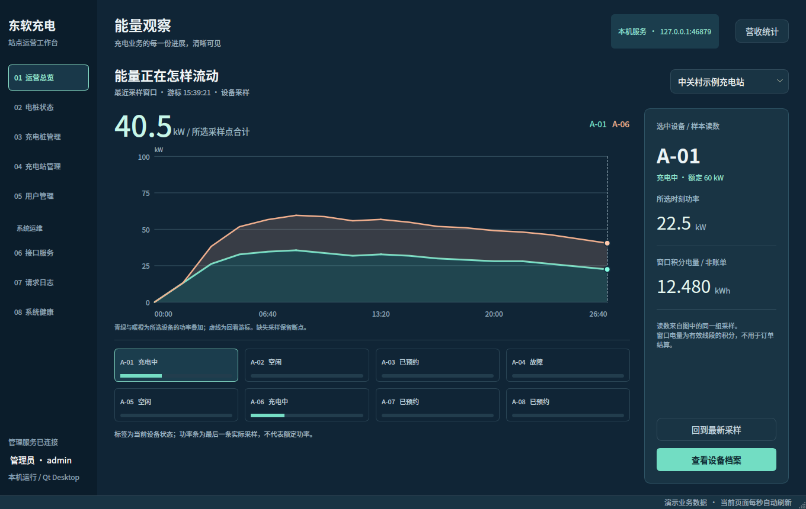
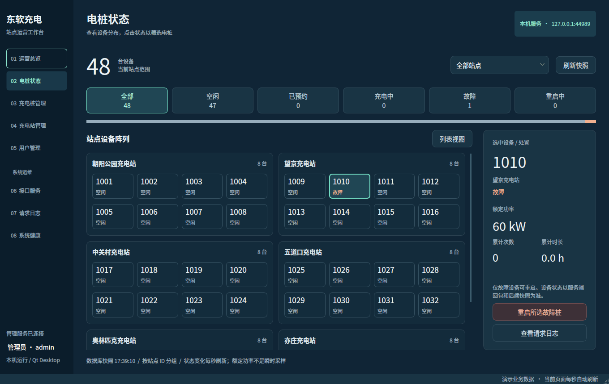

同一主题 · 原生 Qt 联合对照
电桩状态 · 系统健康 · 返回完整留档
全景同为 1360×860、1×，等比缩至 414 px 宽；下方局部为 1:1。原稿只定义运营总览，新页是同主题的业务延展。
已通过运营总览 · 视觉依据
电桩状态 · 已定位故障桩
局部：已通过设备面板 → 新页面选择／处置面板；比较字体、间距、前景背景关系，业务字段不要求相同。
截图来自本机 Qt 测试，不是网页重绘。设备状态／重启为隔离黄金库；主题依据是此前已通过的设计测试样本。